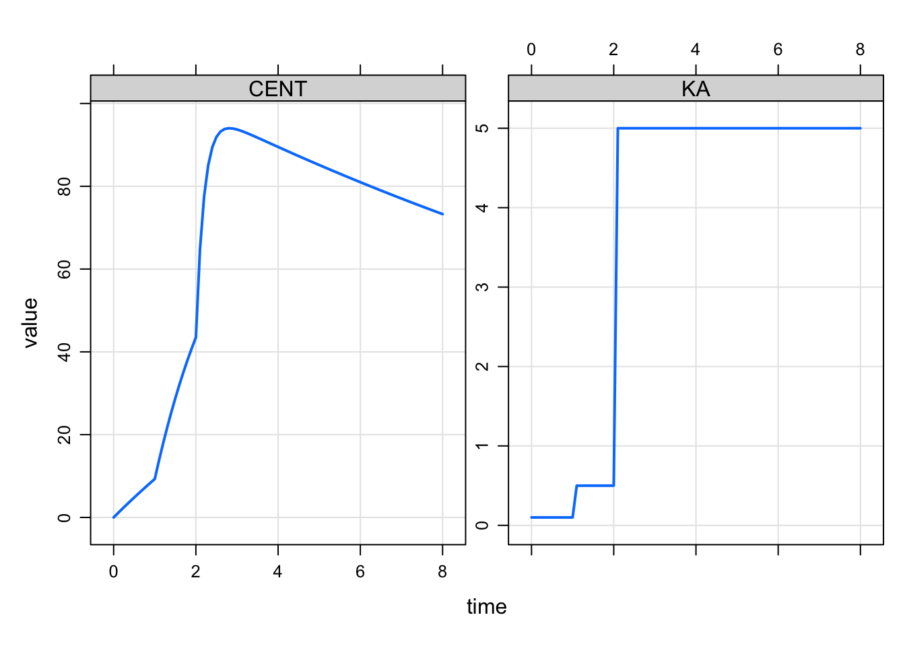

mtime
1 Introduction
This is just a short post on a simplified implementation of modeled events in mrgsolve.
I previously posted here about modeling interventions in mrgsolve. All that still works fine. But I found myself wanting a more straightforward implementation of the mtime functionality you get in NONMEM.
2 Example with single mtime
For example, we might wish a rate constant to change at some time
that is not found in a record in the input data set. We can make this
happen from the model code itself. In addition to using
mevent you can now use mtime to make this
happen. mtime is just a simpler subset of the
mevent functionality.
Let’s make KA change at 2.1 hours (change_t parameter in
the example below).
[ param ]
CL = 1, V = 20, KA1 = 0.1, KA2 = 2.5, change_t = 2.1
[ pkmodel ]
cmt = "GUT,CENT", depot = TRUE
[ main ]
double mt = self.mtime(change_t);
capture KA = KA1;
if(TIME > mt) KA = KA2;
if(TIME == change_t) {
mrg::report("wait a minute ... time is 2.1?");
}Again, the main motivation for this is just convenience and economy of code: we register the event time and get that time returned into a variable that we can reference later on, checking if we are past that time or not.
library(mrgsolve)
options(mrgsolve.soloc = "build")
mod <- mread_cache("mtime_model.txt")
mod %>% ev(amt=100) %>% mrgsim(delta = 0.222) %>% plot(CENT+KA~time)
You won’t see the message that we actually stumbled on
2.1 hours in the simulation even though it was not in the
lineup when the simulation started.
3 Example with several mtimes
We could keep track of several mtimes like this
[ set ] end=8, delta=0.1
[ param ]
CL = 1, V = 20, KA1 = 0.1, KA2 = 0.5, KA3 = 5, change_t = 1
[ pkmodel ]
cmt = "GUT,CENT", depot = TRUE
[ main ]
double mt = self.mtime(change_t);
double mt2 = self.mtime(change_t + 1);
capture KA = KA1;
if(TIME > mt) KA = KA2;
if(TIME > mt2) KA = KA3;mod <- mread_cache("mtime_model_2.txt")
mod %>% ev(amt=100) %>% mrgsim() %>% plot(CENT + KA ~ time)
mrgsolve: mrgsolve.github.io | metrum research group: metrumrg.com